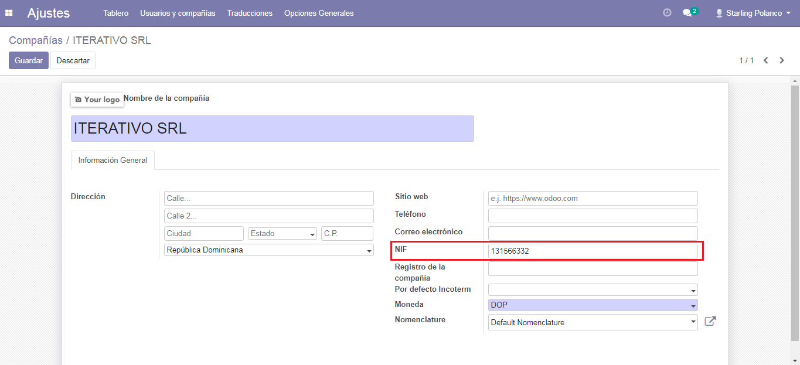
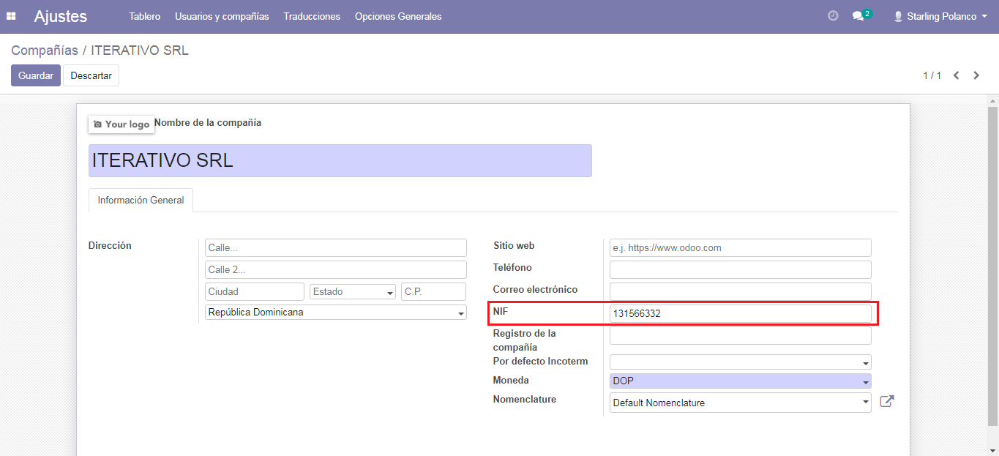

Configurar Compañía¶
Una vez que los módulos están instalados, el primer paso es configurar los datos de su empresa. Además de información básica, un campo clave es (RNC/NIF):
Una vez que los módulos están instalados, el primer paso es configurar los datos de su empresa. Además de información básica, un campo clave es (RNC/NIF):
